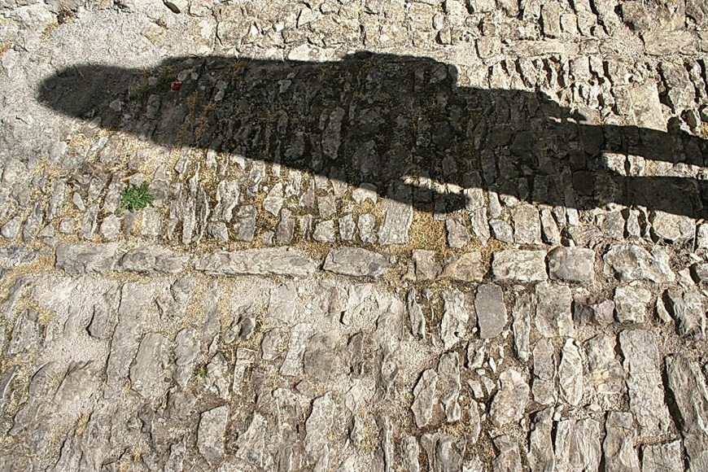

Paraguaná, ha crecido rodeado de Mitos y Leyendas que, los abuelos de hoy en día se han nencargado de que aún se escuchen éstas historias.
1La serpiente emplumada.
Según los cuentistas del pueblo, en el Cerro Santa Ana hay una serpiente encantada, con un plumaje de colores tornasolados, similares a las plumas del faisán. Dicha serpiente sería un “genio” que cuida el lugar, y por eso, muchos pobladores han llegado a afirmar haber escuchado voces, secreteos, carcajadas, gritos, acordes de violines, y muchos otros ruidos, en el cerro.
2Los espantos del Callejón Miranda.
Es una leyenda existente en la población de Pueblo Nuevo, según la cual apariciones vestidas totalmente de blanco y con grandes sombreros asustan a los ebrios que pasan por el callejón Miranda, atormentándolos hasta sus casas. De acuerdo con los pobladores, los hombres que han vivido esta experiencia quedan con una fuerte impresión, y generalmente se alejan de la bebida, al menos por un tiempo.